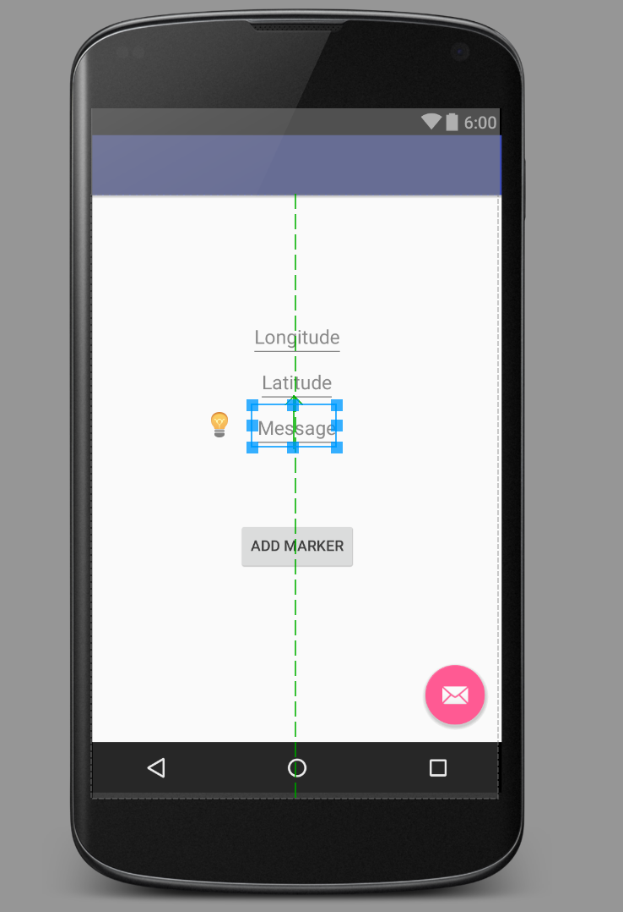

Now we're going to create SpecialMap objects based on user input.
In your Main Activity, add an EditText of the Number(signed) type give it the id latitudeInput.
Set the hint for it as latitude by adding android:hint="Latitude" in the XML.
Add another Number(signed) EditText with the id longituideInput with a hint of "longitude", a Plain
EditText with an id of msgInput and a hint of "Message,"
a button with the text "add marker" (or whatever you want) and leave the id for the button alone
(so it has the default id of button).
Here is what mine looks like:
and the XML for it looks like this:
xmlns:app="http://schemas.android.com/apk/res-auto"
xmlns:tools="http://schemas.android.com/tools"
android:layout_width="match_parent"
android:layout_height="match_parent"
android:paddingBottom="@dimen/activity_vertical_margin"
android:paddingLeft="@dimen/activity_horizontal_margin"
android:paddingRight="@dimen/activity_horizontal_margin"
android:paddingTop="@dimen/activity_vertical_margin"
app:layout_behavior="@string/appbar_scrolling_view_behavior" tools:showIn="@layout/activity_main">
android:layout_width="wrap_content"
android:layout_height="wrap_content"
android:inputType="numberSigned"
android:id="@+id/longitudeText"
android:layout_marginTop="96dp"
android:layout_centerHorizontal="true"
android:hint="Longitude" /> android:layout_width="wrap_content"
android:layout_height="wrap_content"
android:inputType="numberSigned"
android:id="@+id/latitudeInput"
android:hint="Latitude"
android:layout_below="@+id/longitudeText"
android:layout_centerHorizontal="true" />
android:layout_width="wrap_content"
android:layout_height="wrap_content"
android:text="Add Marker"
android:id="@+id/button"
android:layout_below="@+id/latitudeInput"
android:layout_centerHorizontal="true"
android:layout_marginTop="107dp" /> android:layout_width="wrap_content"
android:layout_height="wrap_content"
android:id="@+id/msgText"
android:layout_below="@+id/latitudeInput"
android:layout_centerHorizontal="true"
android:hint="Message" />I reccomend that you run your app to make sure that it still works now.
In your MainActivity class, add these class variables just above your onCreate() method:
private EditText mLatInput = (EditText) findViewById(R.id.latitudeInput);
private EditText mLongInput = (EditText) findViewById(R.id.longitudeInput);
private EditText mMsgInput = (EditText) findViewById(R.id.msgInput);
private Button mButton = (Button) findViewById(R.id.button);
Inside your onCreate() method, look at where you create and save a SpecialMap object with hard-coded data. Delete that and add this this in its place:
mButton.setOnClickListener(new View.OnClickListener() {
public void onClick(View v) {
//Grab the values from the input fields
double latitude = Double.valueOf(mLatInput.getText().toString());
double longitude = Double.valueOf(mLongInput.getText().toString());
String msg = mMsgInput.getText().toString();
//Create the SpecialMap object
SpecialMap newSpecialMap = new SpecialMap(latitude, longitude, msg);
newSpecialMap.saveSpecialMap();
//Refresh the Activity, just so you can see some responsiveness
Intent intent = getIntent();
startActivity(intent);
}
});
Run the app again. Enter values for latitude and longitude, and a message that you want to add to the app. This time, the activity should refresh after you hit submit.
Check your database for a new SpecialMap object created on the input you just submitted.
Toggle Menu